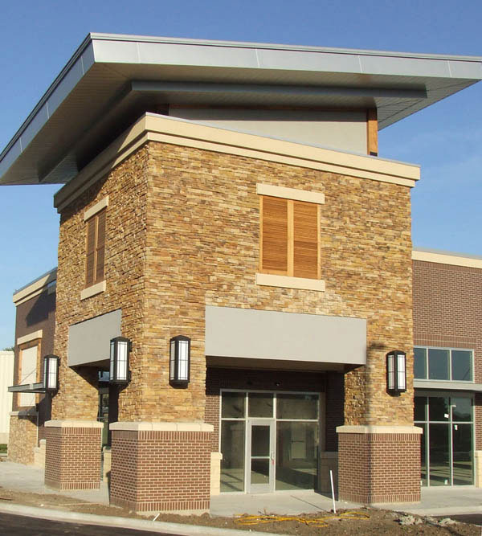

<div class="content">
 <div id="largeLeft">
  <h1>
   cut cost with design-build
  </h1>
  <p>The Design/Build process pulls together building owner, architect, general contractor and any specialty subcontractors into a cohesive team with either the general contractor or architect serving as the team leader with overall responsibility for project communication.</p>
  <p>Meyer Brothers frequently serves as that point person but we are also team players when the architect takes the lead.</p>
  <p>Because of the design/build structure, costs are minimized and time is saved because all parties have accepted the project's design before construction starts.</p>
    <p>Simply put, this up-front agreement leads to less confusion during the execution of the contract. This single source responsibility creates more opportunities for value engineering.</p>
   <a href="//Images/projects/Heritage-Crossing/Heritage-Crossing-5.jpg">
    
   </a>
 </div>
</div>
